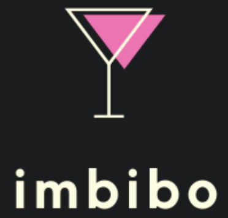

search for a cocktail or an ingredient
Search by Glass Type
Search by Spirit
Recommended Drink:

Blue Margarita
Instructions
Rub rim of cocktail glass with lime juice. Dip rim in coarse salt. Shake tequila, blue curacao, and lime juice with ice, strain into the salt-rimmed glass, and serve.
| Ingredients | |
|---|---|
|
Tequila
Blue Curacao Lime juice Salt |
1 1/2 oz 1 oz 1 oz Coarse |